K562 Neither DNase matched - State 11:FaireW (n=17)
K562 Neither DNase matched - State 11:FaireW (n=17)
[
See group descriptions
]
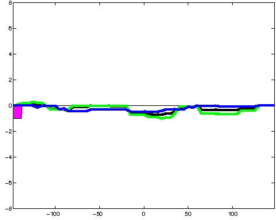
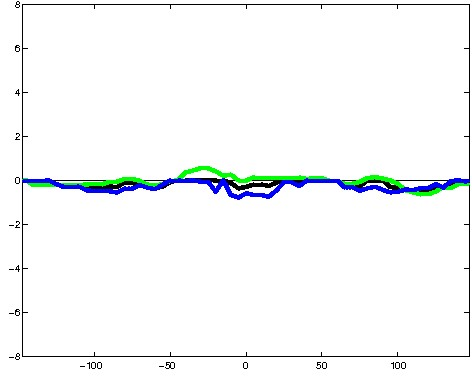
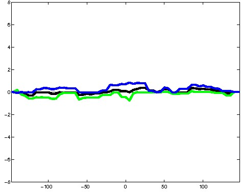
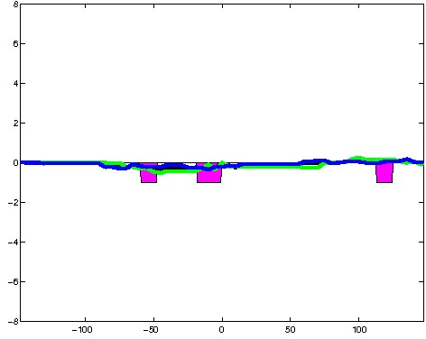
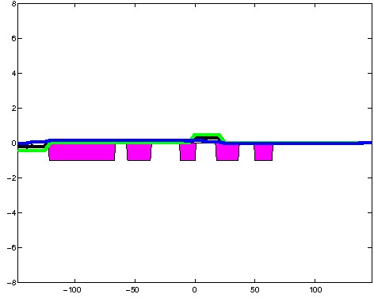
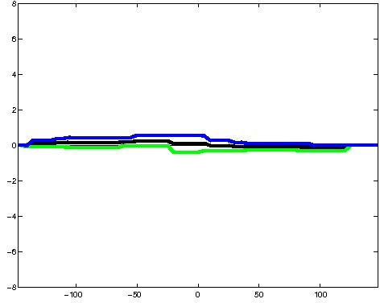
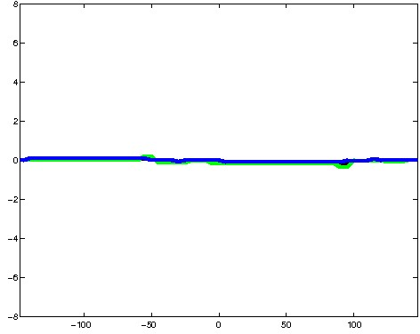
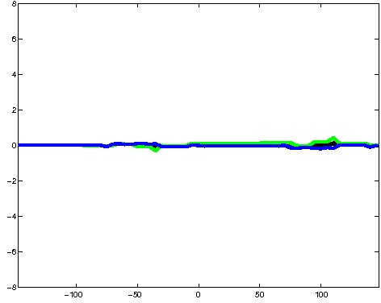
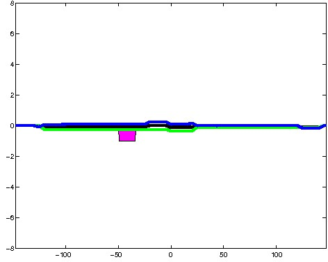
; picked in K562 (state 11:FaireW, DNase); matched; chr8:77,114,109-77,114,403 (295bp)") 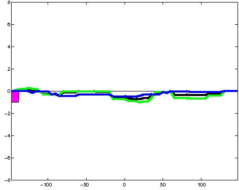
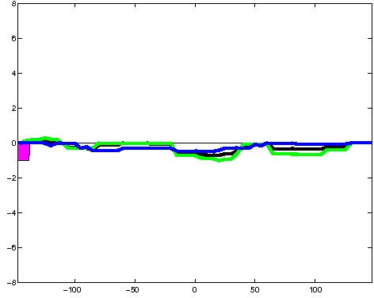
; picked in K562 (state 11:FaireW, DNase); matched; chr13:92,176,789-92,177,083 (295bp)")
; picked in K562 (state 11:FaireW, DNase); matched; chr8:39,783,809-39,784,103 (295bp)") 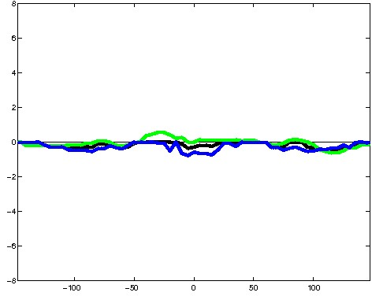
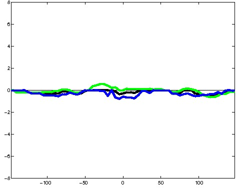
; picked in K562 (state 11:FaireW, DNase); matched; chr1:46,390,989-46,391,283 (295bp)")
; picked in K562 (state 11:FaireW, DNase); matched; chr7:106,488,049-106,488,343 (295bp)")
; picked in K562 (state 11:FaireW, DNase); matched; chr17:39,338,769-39,339,063 (295bp)") 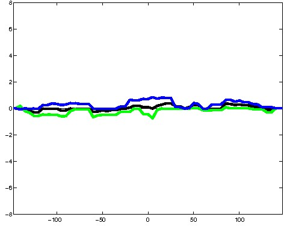
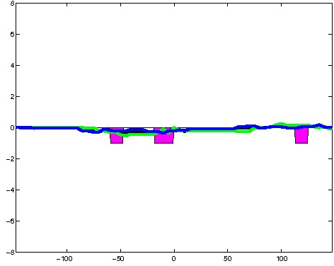
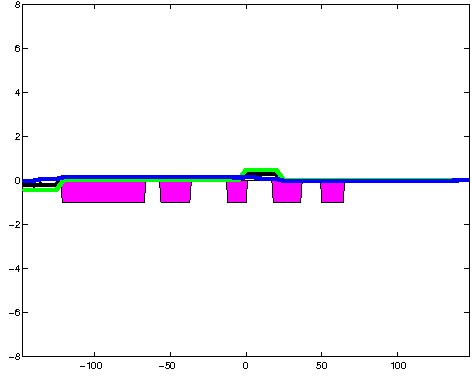
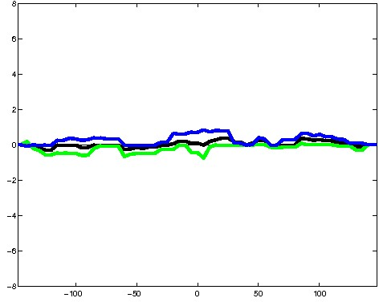
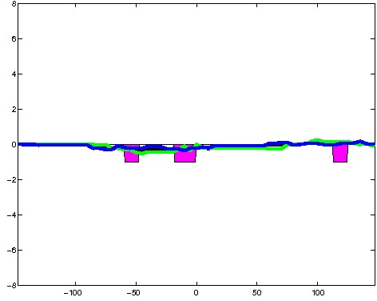
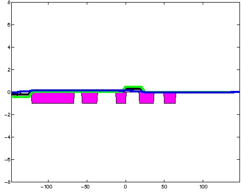
; picked in K562 (state 11:FaireW, DNase); matched; chr21:9,834,069-9,834,363 (295bp)") 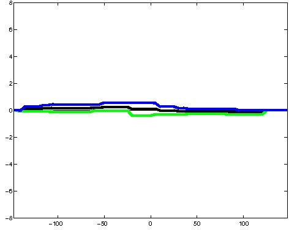
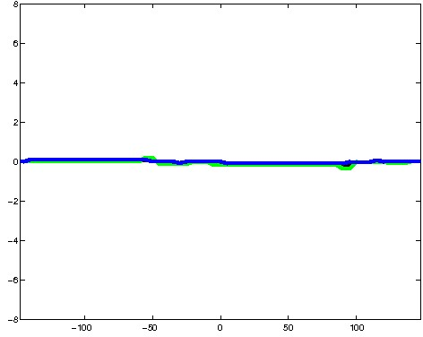
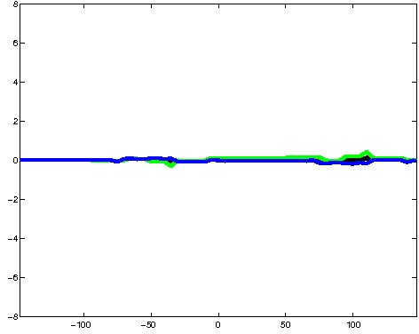
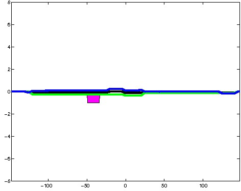
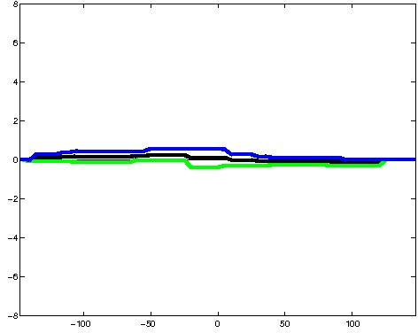
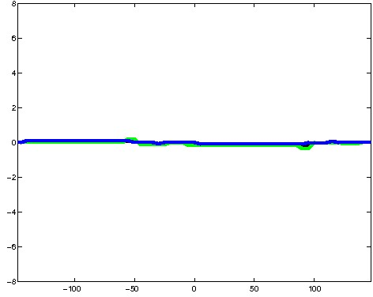
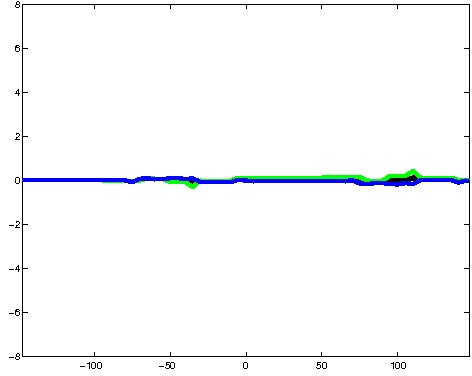
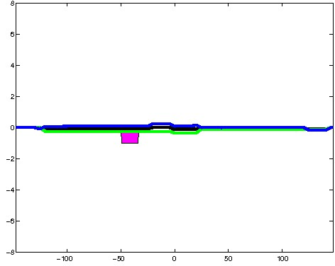
; picked in K562 (state 11:FaireW, DNase); matched; chr3:71,441,489-71,441,783 (295bp)")